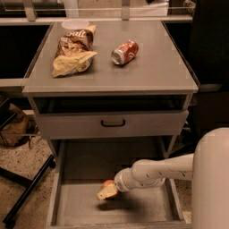

Abstract
Text-to-video models have demonstrated substantial potential in robotic decision-making, enabling the imagination of realistic plans of future actions as well as accurate environment simulation. However, one major issue in such models is generalization -- models are limited to synthesizing videos subject to language instructions similar to those seen at training time. This is heavily limiting in decision-making, where we seek a powerful world model to synthesize plans of unseen combinations of objects and actions in order to solve previously unseen tasks in new environments. To resolve this issue, we introduce RoboDreamer, an innovative approach for learning a compositional world model by factorizing the video generation. We leverage the natural compositionality of language to parse instructions into a set of lower-level primitives, which we condition a set of models on to generate videos. We illustrate how this factorization naturally enables compositional generalization, by allowing us to formulate a new natural language instruction as a combination of previously seen components. We further show how such a factorization enables us to add additional multimodal goals, allowing us to specify a video we wish to generate given both natural language instructions and a goal image. Our approach can successfully synthesize video plans on unseen goals in the RT-X, enables successful robot execution in simulation, and substantially outperforms monolithic baseline approaches to video generation.
Overall framework of RoboDreamer. On the left, We leverage the natural compositionally of language to parse instructions into components like action phrases and relation phrases. On the right, we show how RoboDreamer composes multiple components.
Qualitative Results
This section contains video generation under Seen tasks and Unseen tasks; multimodal generation; RLBench Results; generation under Partial Description; Other Datasets.
Seen Task Generation
|
move green can near water bottle |
move apple near orange can |
move 7up can near paper bowl |
move green chip bag near apple |
|
move rxbar chocolate near coke can |
move green chip bag near coke can |
move blue plastic bottle near redbull can |
move green can near orange |
|
move sponge near blue plastic bottle |
move apple near green chip bag |
move orange near blue rxbar blueberry |
move green can near rxbar blueberry |
Unseen Task Generation
|
move pepsi can near water bottle |
move sponge near orange |
move rxbar chocolate near pepsi can |
move sponge near orange can |
|
move pepsi can near blue plastic bottle |
move blue chip bag near coke can |
move apple near sponge |
move rxbar chocolate near pepsi can |
|
move pepsi can near apple |
move apple near blue chip bag |
move 7up can near green can |
move sponge near apple |
MultiModal Generation (Goal Image)
|
pick pepsi can from bottom drawer |
open top drawer |
pick apple from white bowl |
|
move rxbar bluecherry near blue plastic bottle |
pick banana from white bowl |

place orange into middle drawer |
MultiModal Generation (Goal Sketch)
|
pick apple from top drawer |
open middle drawer |
place blue plastic bottle upright |
|
place pepsi can upright |

pick apple |

place 7up can into middle drawer |
RLBench
Left shows the synthetic video and Right shows the results.
|
stack blocks |
lift block |
take shoes out of box |
|
take shoes out of box |
lamp off |
close box |
|
lamp off |
stack blocks |
lift block |
|
close box |
take shoes out of box |
stack blocks |
Partial Description
|
move pepsi can |
move blue chip bag |
move rxbar chocolate |
|
move sponge |
move rxbar chocolate |
move pepsi can |
Other Datasets
|
put the ranch bottle into the pot |
pick up red cup and put on blue napkin |
place steak meat on the table |
close microwave |
|
place the burger meat in the oven |
place the pan over the yellow cloth |
pick up orange fruit |
pick up the blue cup and put it into the brown cup |
|
sweep the green cloth to the left side of the table |
move purple cloth to the left of the table |
open top drawer |
close bottom drawer |